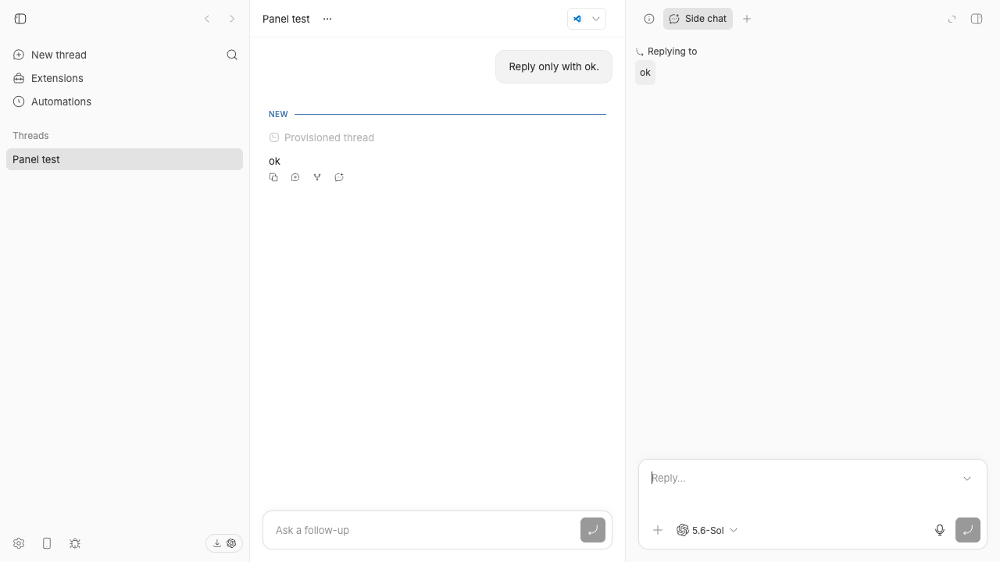
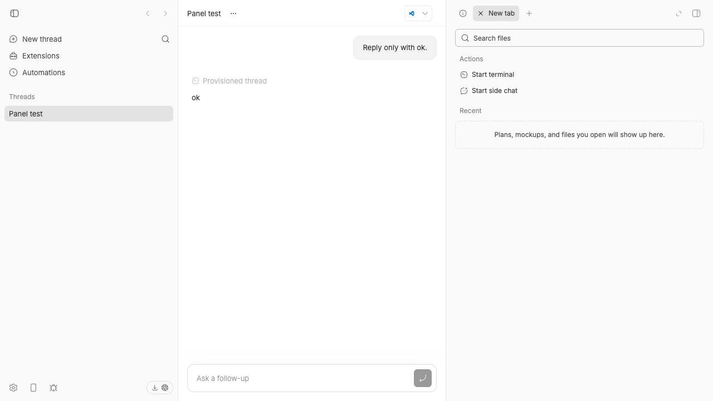

Right-panel tabs remain stable on the current main branch
Result
- New-tab sample
- 101 samples during five seconds; the tab appeared once and stayed present.
- Reply sample
- 250 samples during five seconds; the side-chat tab appeared once and stayed present.
- Focused test
- Two tests passed in each clean checkout.
- Existing pane suite
- All 33 tests passed.
- Application build
- The full Turbo build passed.
Claim and finding
| Claim | Current-main finding |
|---|---|
| A closed side chat returns during a new-tab action. | The side chat stayed closed. One new tab appeared and stayed present. |
| A Reply action starts a repeated tab cycle. | One side-chat tab appeared. The browser found no repeated add or remove cycle. |
| A reload can clear the state. | The clean runs did not require a reload or a recovery action. |
Direct browser reproduction
- Build trusted commit
3414fdawith Turbo. - Start an isolated application, server, daemon, and data directory.
- Create one isolated main thread.
- Open a side chat and wait for its tab.
- Close the side chat, then open a new tab.
- Sample the right-panel toolbar every 20 milliseconds for five seconds.
- Close the new tab, then select Reply.
- Sample the toolbar again for five seconds.
The expected failure was a repeated tab add and remove cycle. The actual result was one stable tab for each action. The sample output follows.
{
"sampleIntervalMs": 20,
"newTabRun": {
"sampleCount": 101,
"changes": [
{"ms": 59, "labels": ["Open new tab"]},
{"ms": 539, "labels": ["New tab", "Open new tab"]}
],
"finalState": {"newTabPresent": true, "newTabSearchPresent": true}
},
"replyRun": {
"sampleCount": 250,
"changes": [
{"ms": 92, "labels": ["Open new tab"]},
{"ms": 814, "labels": ["Side chat", "Close Side chat", "Open new tab"]}
],
"finalState": {"sideChatTabPresent": true}
}
}


Focused reproduction test
The test creates separate side-chat and new-tab panes. It leaves ownership on the side-chat pane before each action.
One child control stops pointer propagation. The other child receives keyboard focus. Each path must activate the new-tab pane exactly once.
it("activates the new-tab pane before a control stops pointer propagation", async () => {
const split = createTwoPaneState();
const [sideChatPaneId, newTabPaneId] = paneIds(split);
window.localStorage.setItem(
sidebarSplitStorageKey(PANEL_STATE_ID),
serializeSidebarSplitState(focusSidebarPane(split, sideChatPaneId)),
);
const activate = vi.fn();
renderContainer({
onActivateTab: activate,
renderPane: ({ paneId }) => (
<button
type="button"
aria-label={paneId === newTabPaneId ? "Open new tab" : "Close Side chat"}
onPointerDown={(event) => event.stopPropagation()}
/>
),
});
fireEvent.pointerDown(screen.getByRole("button", { name: "Open new tab" }));
await waitFor(() => expect(activate).toHaveBeenCalledWith(NEW_TAB_ID));
expect(activate).toHaveBeenCalledTimes(1);
});
it("activates the new-tab pane when keyboard focus enters it", async () => {
const split = createTwoPaneState();
const [sideChatPaneId, newTabPaneId] = paneIds(split);
window.localStorage.setItem(
sidebarSplitStorageKey(PANEL_STATE_ID),
serializeSidebarSplitState(focusSidebarPane(split, sideChatPaneId)),
);
const activate = vi.fn();
renderContainer({
onActivateTab: activate,
renderPane: ({ paneId }) => (
<button
type="button"
aria-label={paneId === newTabPaneId ? "Open new tab" : "Close Side chat"}
/>
),
});
fireEvent.focus(screen.getByRole("button", { name: "Open new tab" }));
await waitFor(() => expect(activate).toHaveBeenCalledWith(NEW_TAB_ID));
expect(activate).toHaveBeenCalledTimes(1);
});
pnpm exec turbo run test --filter=@bb/app --force -- src/components/secondary-panel/SidebarSplitContainer.issue-2699.test.tsx Test Files 1 passed (1) Tests 2 passed (2)
Root cause
Version 0.40.0 used a bubble-phase pointer handler for pane ownership. A child control could stop that event before the pane received it.
Keyboard focus also did not update pane ownership. A later global tab action could therefore target the prior pane.
The release source shows the bubble handler at lines 539–542.
Post-release commit
c05dba2
moved pointer ownership to the capture phase and added focus capture.
Current main has both handlers at lines 648–653. Its regression tests cover both paths at lines 190–275.
Verification
| Checkout one | Trusted base plus the focused test. The full build passed. Both focused tests passed. |
|---|---|
| Checkout two | A separate detached checkout at the same trusted base. Both focused tests passed again. |
| Relevant suite | SidebarSplitContainer.test.tsx passed all 33 tests. |
| Browser | macOS 26.6.1, arm64, headless Chrome at 1280 × 720. |
| Toolchain | Node 22.22.3 and pnpm 9.15.0. |
Fix decision
No new patch is necessary. Current main already contains the pane-ownership fix and regression coverage.
A new pull request would duplicate that code. The simple-fix gate also requires a failure on current main.
Scope and trust
The investigation used only trusted repository code and changes created for this report. It did not fetch any issue attachment.
The report used issue text only as an untrusted claim. Repository code, test results, and direct browser state support each finding.